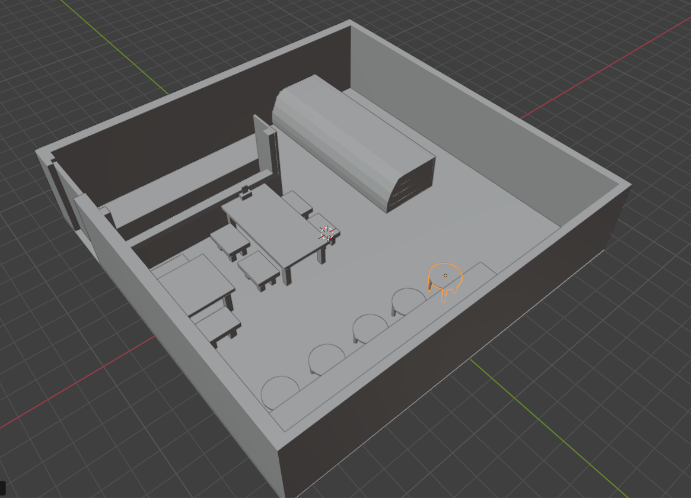
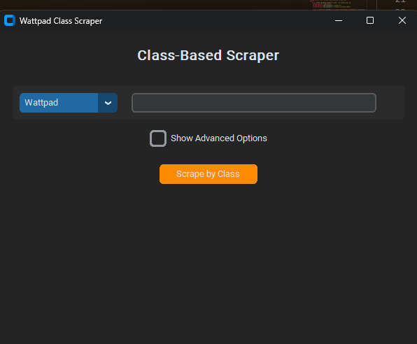
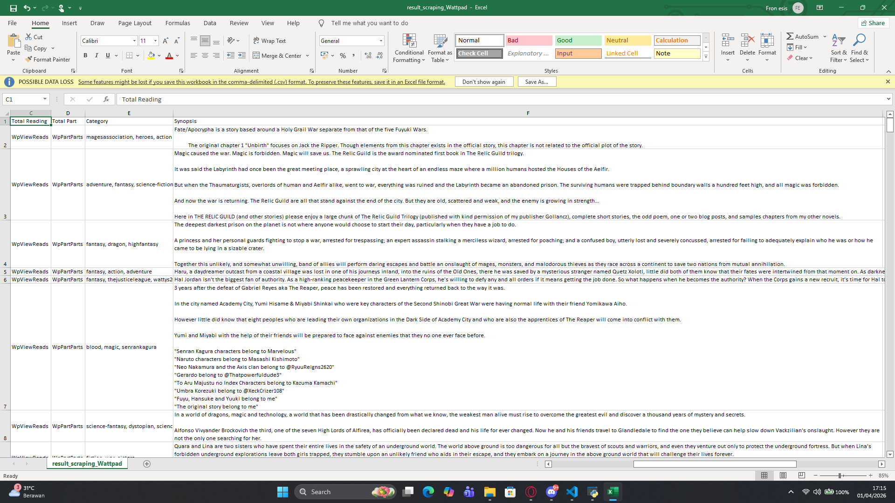
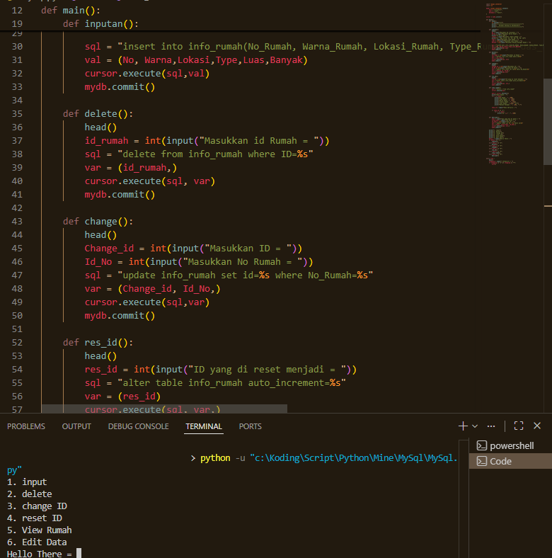
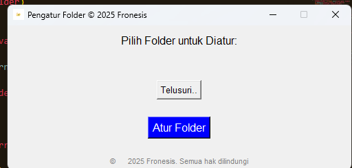
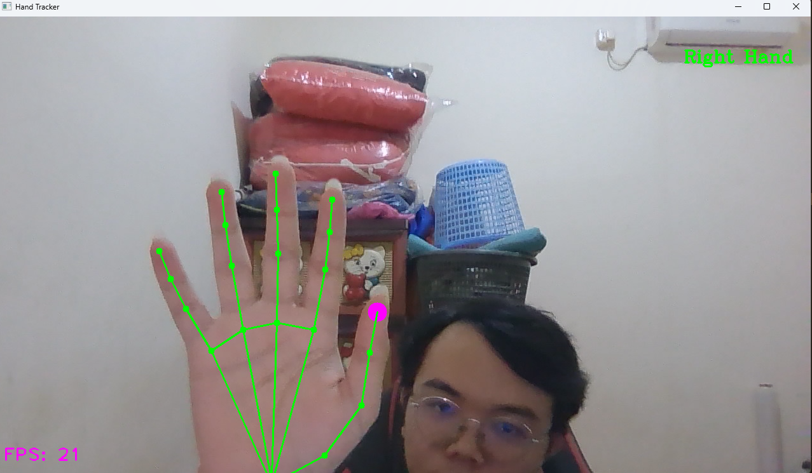
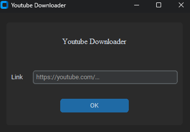
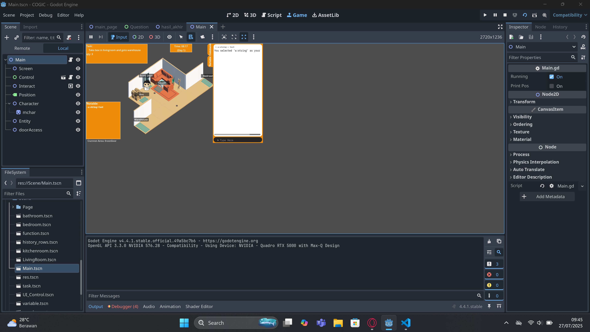

Andre Juvento
Welcome
Selamat Datang di Portofolio Saya, di website ini saya akan menampilkan informasi tentang diri saya, pengalaman kerja, pendidikan, dan project yang telah saya kerjakan. Saya berharap dengan adanya portofolio ini, Anda dapat mengenal saya lebih baik dan melihat kemampuan serta pengalaman yang saya miliki. Terima kasih telah mengunjungi portofolio saya, jangan ragu untuk menghubungi saya jika Anda memiliki pertanyaan.
About Me
Saya menyelesaikan kuliah pada September 2025 di Institute Bisnis dan Teknologi Pelita Indonesia dengan jurusan Teknologi Informasi dan melakukan kerja sambal kuliah di First Resources selama 4 tahun di department Invoicing.
Saya membuat proyek simple pada department saya untuk mempermudah pekerjaan dalam penggunaan Excel/Spreadsheet yang dimana penggunaan sampai saat ini.
Serta memberikan ide untuk proyek-proyek yang sedang dilaksanakan dan proyek kedepannya.
- Keahlian:
- Microsoft Excel, Microsoft PowerPoint, Microsoft Word, Google Spreadsheet, Google Docs, Google Slides, MySQL, Python, HTML, CSS, JavaScript, PHP, C++, C#, Java.
- Bahasa:
- Bahasa Indonesia (Native), Bahasa Inggris (Elementary), Hokkien(Fluent)
- Hobi:
- Menggambar, bermain game, membaca komik, basket, badminton, koding, sepeda, melakukan hal baru
- Karakter:
- Kreatif, proaktif, bekerja sama, bertanggung jawab, overthinking
- Kepribadian:
- Introvert, mudah beradaptasi, perfeksionis, kritis, analitis
- Aplikasi:
- DaVinci Resolve, Adobe Photoshop, Blender, Microsoft Excel, Google Spreadsheet, dan beberapa aplikasi lainnya.
Saya gunakan untuk mengerjakan tugas kuliah dan pekerjaan saya. Saya mempelajari beberapa bahasa pemrograman seperti HTML, CSS, JavaScript, PHP, MYSQL, Python, Godot, Unity(C#), C++, Excel(VBA), flutter, nextJS. Saya mempelajari bahasa pemrograman tersebut melalui proyek kecil yang dibantu oleh AI, serta melalui video tutorial di YouTube sehingga ada beberapa kekurangan dalam pemahaman saya tentang bahasa pemrograman tersebut, namun saya terus belajar dan berusaha untuk meningkatkan kemampuan saya dalam bahasa pemrograman tersebut.
Contact
Kontak saya dapat dihubungi melalui:
 andrejuvento7@gmail.com
andrejuvento7@gmail.com 082117381355
082117381355 andrejuvento
andrejuvento
Experience
First Resources, 2021 - 2025 (Invoicing)
Saya bekerja di First Resources selama 4 tahun di department Invoicing, saya membuat proyek simple pada department saya untuk mempermudah pekerjaan dalam penggunaan Excel/Spreadsheet yang dimana penggunaan sampai saat ini.
Serta memberikan ide untuk proyek-proyek yang sedang dilaksanakan dan proyek kedepannya.
Pendidikan
SD Bina Mitra Wahana, 2009 - 2015
SMP Dharma Loka, 2015 - 2018
SMK Metta Maitreya, 2018 - 2021 (Teknik Komputer dan Jaringan)
Kuliah di Institute Bisnis dan Teknologi Pelita Indonesia, 2021 - 2025 (Teknologi Informasi)
Bahasa pemrograman yang dikuasai
Dalam MySQL saya dapat membuaat database, mengambil data, mengedit data, serta memvisualisasikan data menggunakan python. Biasanya saya menggunakan MySQL untuk membuat database untuk proyek-proyek yang saya buat, seperti user login, sistem inventory, dan lain-lain. Saya juga menggunakan MySQL untuk mengambil data dari database dan memvisualisasikan data tersebut menggunakan python untuk membuat laporan atau sistem inventory yang lebih interaktif.
Bahasa pemograman yang paling saya kuasai salah satunya adalah Python, saya menggunakan Python untuk membuat tools yang sering digunakan untuk mempermudah saya. Saya membuat beberapa program seperti: Folder Organizer, Web Scraping, Data Visualization, Hand Tracking, Chat Bot, Youtube Downloader, Otomisasi Absen saat kuliah, Tampilan GUI dan masih banyak lagi.
Saya diperkenalkan dengan HTML, CSS, dan JavaScript di awal SMP dari situ saya sudah mulai tertarik dengan ini karena bermodal dari notepad(aplikasi open source) sudah dapat membuat website sederhana, dari situ saya mulaii belajar lebih dalam tentang HTML, CSS, dan JavaScript melalui website dan dokumentasi. Saya menggunakan HTML untuk membuat struktur website, CSS untuk membuat tampilan website, dan JavaScript untuk membuat interaksi pada website.
Saya mempelajari PHP untuk membuat website dinamis, saya mempelajari PHP melalui kuliah dan hasil eksperimen sendiri. Saya menggunakan PHP untuk membuat sistem login, sistem inventory, dan lain-lain yang membutuhkan interaksi dengan database MySQL. Saya juga menampilkan hasil dari visualisasi seperti diagram tabel pada website menggunakan PHP untuk mengambil data dari database MySQL.
Awal saya belajar C++ pada SMK di kelasa 10, saya belajar C++ yaitu untuk mempelajari dasar-dasar pemograman seperti variabel, tipe data, operator, percabangan, perulangan, fungsi, dan lain-lain. Saya menggunakan C++ untuk meningkatkan logika pemograman saya dari membuat interaksi sederhana seperti chatbot serta digunakan dalam pembuatan game pada skripsi.
Saya mempelajari C# untuk membuat game menggunakan Unity, saya mempelajari C# melalui dokumentasi dan video tutorial di YouTube. Game yang saya buat hanyalah game dasar seperti game 2D dengan mekanisme sederhana seperti flappy bird, platform.
Saya mempelajari Java di awal kuliah, dalam mempelajari Java saya diajari dasar-dasar bagaimana cara menghubungkan Java dengan database yang sudah dibuat. Aplikasi yang saya buat menggunakan Java hanyalah aplikasi dasar seperti aplikasi catatan, aplikasi kalkulator, dan lain-lain yang memiliki mekanisme sederhana.
Project

1. Blender
Blender adalah software open source untuk membuat animasi 3D, saya menggunakan Blender untuk membuat model 3D dan animasi sederhana. Saya menggunakan Blender untuk membuat model 3D seperti karakter, objek, dan lain-lain serta membuat animasi sederhana seperti berjalan, berlari, dan lain-lain.

2. Web Scraping
Web Scraping adalah proses mengambil data dari website, saya membuat project web scraping untuk mengambil data website dan memvisualisasikan data tersebut menggunakan python. Saya menggunakan library BeautifulSoup untuk mengambil data dari website dan library Matplotlib untuk memvisualisasikan data tersebut.

Hasil dari web scraping yang saya buat dari wattpad.

3. Automisasi Insert Data
Auto Insert, Edit Data, Hapus Data adalah project yang saya buat untuk mempermudah masuk, edit, dan hapus data. Project ini sangat membantu saya dalam pekerjaan saya karena dapat menghemat waktu dan mengurangi pengulangan pengetikan.

4. Folder Organizer
Folder Organizer adalah project yang saya buat untuk mengatur folder secara otomatis, project ini sangat membantu saya dalam mengatur folder karena dapat menghemat waktu dalam penataan folder.

5. Hand Tracking
Hand Tracking adalah project yang saya buat untuk melacak pergerakan tangan menggunakan python, project ini dibuat untuk mempelajari hall baru.

6. Youtube Downloader
Youtube Downloader adalah project yang saya buat untuk mendownload video dari youtube, tools ini dibuat karena saya penasaran bagaimana cara pembuatannya.

7. Game COGIC
Game COGIC adalah project game yang saya buat untuk skripsi, game ini dibuat menggunakan C++ dan menggunakan konsep dasar dari game 2D dengan mekanisme sederhana. Game ini bertujuan untuk memperkenalkan konsep dasar pemograman kepada orang awam.